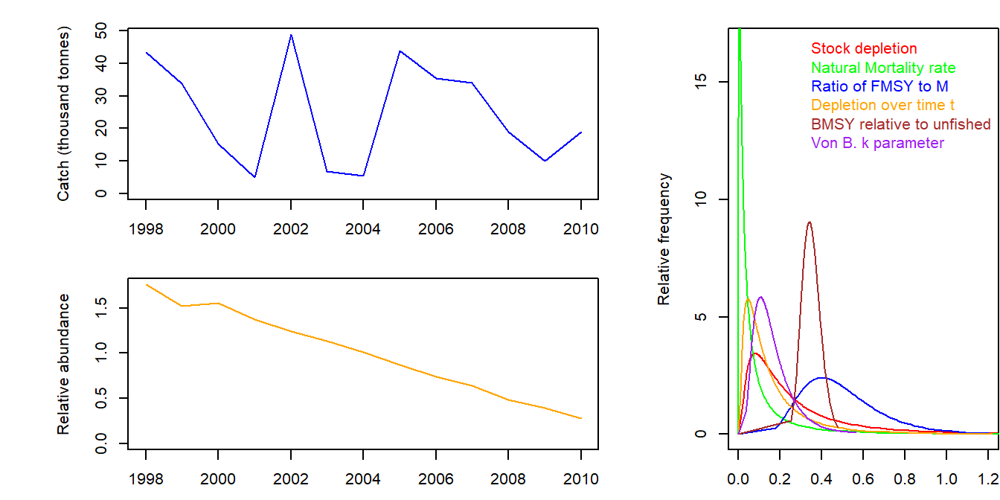
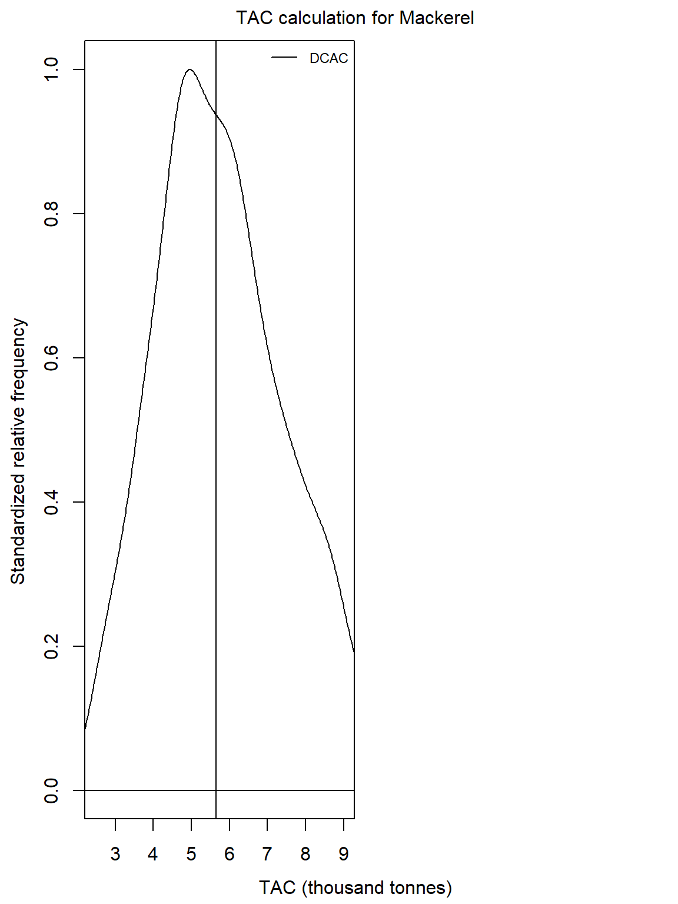
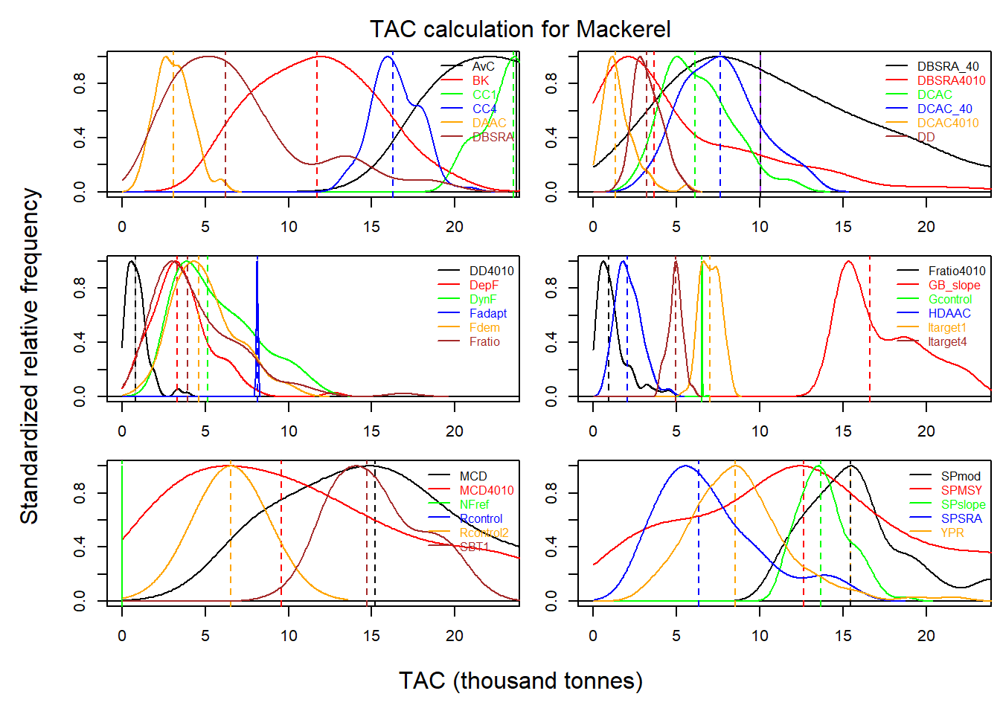
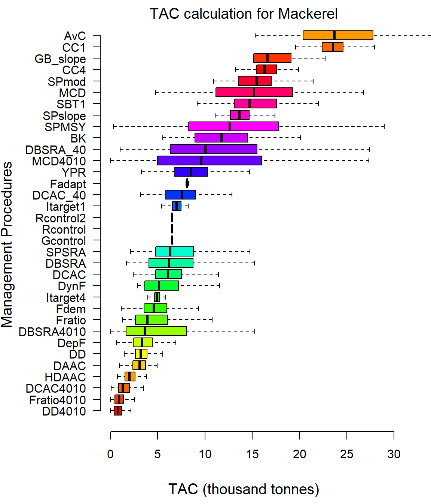

Chapter 8 Managing Fishery Data
8.1 The Fishery Data Object (Data)
The second argument for all Management Procedures in the DLMtool is something called Data.
Data is an object class in the DLMtool that contains all of the fishery information that can be used by the Management Procedure. You find the documentation for the Data class by typing:
class?DataYou can see from the documentation that the Data object, or Fishery Data object, contains many slots, and a lot of information can be stored in this object, including biological parameters, fishery statistics such as time-series of catch, and past management recommendations.
8.1.1 In the MSE
In the MSE the Fishery Data object is populated with data that is generated by the simulation model. Here the ‘true’ data generated by the model is filtered through the Observation Model (using the Observation parameters) and entered into the Fishery Data object to represent typical fisheries data.
The MSE consists of many hundreds of simulations, and because the DLMtool has been designed for parallel processing, the Fishery Data object in the MSE actually consists of hundreds of ‘versions’ of the simulated fishery data.
The first argument for all Management Procedure functions is x, which is the position in the Data object that refers to the data corresponding that particular iteration. In the MSE, the value of x goes from 1 to the total number of simulations (nsim).
8.1.2 Application of Management Procedures Using Real Fisheries Data
In contrast to the MSE, in the real world application of a Management Procedure, we only have one version of the fishery data: the data that has been collected from the fishery.
The Fishery Data object contains all of the fishery information that can be used by a Management Procedure. By definition, many sources of data are not available in data-limited fisheries, and the Fishery Data object may not be completely populated. The DLMtool can be used to determine which of the Management Procedures in the Toolkit are available to be used given the data in the Fishery Data object, which methods cannot be used, and what data are required to make these methods available. More information on applying Management Procedures to fishery data can be found in the [Application of Management Procedure] section.
8.2 Example Data Objects
The DLMtool package has a number of example Fishery Data objects. This can be listed using the avail function:
avail("Data")## [1] "Atlantic_mackerel" "China_rockfish" "Cobia"
## [4] "Example_datafile" "Gulf_blue_tilefish" "ourReefFish"
## [7] "Red_snapper" "Simulation_1"This shows us that there is 8 example Fishery Data objects in the DLMtool.
8.3 Creating Your Own Data Object
DLMtool has a series of functions to make importing data and applying data-limited Management Procedures relatively straightforward.
There are two approaches:
- Fill out a .csv data file in excel or a text editor and use a DLMtool function to create a properly formatted
Dataobject (classData), or - Create a blank
Dataobject and populate it in R.
8.3.1 Creating a CSV Data File
Probably the easiest way to get your data into the DLMtool is to populate a .csv data file. These files have a line for each slot of the Data object:
slotNames('Data')## [1] "Name" "Year" "Cat" "Ind" "Rec"
## [6] "t" "AvC" "Dt" "Mort" "FMSY_M"
## [11] "BMSY_B0" "Cref" "Bref" "Iref" "L50"
## [16] "L95" "LFC" "LFS" "CAA" "Dep"
## [21] "Abun" "SpAbun" "vbK" "vbLinf" "vbt0"
## [26] "LenCV" "wla" "wlb" "steep" "CV_Cat"
## [31] "CV_Dt" "CV_AvC" "CV_Ind" "CV_Mort" "CV_FMSY_M"
## [36] "CV_BMSY_B0" "CV_Cref" "CV_Bref" "CV_Iref" "CV_Rec"
## [41] "CV_Dep" "CV_Abun" "CV_vbK" "CV_vbLinf" "CV_vbt0"
## [46] "CV_L50" "CV_LFC" "CV_LFS" "CV_wla" "CV_wlb"
## [51] "CV_steep" "sigmaL" "MaxAge" "Units" "Ref"
## [56] "Ref_type" "Log" "params" "PosMPs" "MPs"
## [61] "OM" "Obs" "TAC" "Sense" "CAL_bins"
## [66] "CAL" "MPrec" "MPeff" "ML" "Lbar"
## [71] "Lc" "LHYear" "nareas" "Misc" "TACbias"You do not have to enter data for every line of the data file, if data are not available simply put an ‘NA’ next to any given field.
8.3.1.1 Example Fishery Data CSV Files
There are also CSV files for these example Fishery Data objects that are included in the DLMtool package. To find the location where these files are located on your machine, use the DLMDataDir function:
DLMDataDir()## [1] "C:/Users/arhor/Documents/R/win-library/3.4/DLMtool/"We can then load one of the example CSV files using the new function:
China_rockfish2 <- new("Data", paste0(DLMDataDir(),"China_rockfish.csv"))Alternatively, you can navigate to the data directory on your machine and examine the contents and structure of the CSV data files in MS Excel or other software.
8.3.2 Populating a Data Object in R
Alternatively you can create a blank Data object and fill the slots directly in R. For example:
Madeup <- new('Data') # Create a blank DLM object## [1] "Couldn't find specified csv file, blank DLM object created"Madeup@Name <- 'Test' # Name it
Madeup@Cat <- matrix(20:11*rlnorm(10,0,0.2),nrow=1) # Generate fake catch data
Madeup@Units <- "Million metric tonnes" # State units of catch
Madeup@AvC <- mean(Madeup@Cat) # Average catches for time t (DCAC)
Madeup@t <- ncol(Madeup@Cat) # No. yrs for Av. catch (DCAC)
Madeup@Dt <- 0.5 # Depletion over time t (DCAC)
Madeup@Dep <- 0.5 # Depletion relative to unfished
Madeup@vbK <- 0.2 # VB maximum growth rate
Madeup@vbt0 <- (-0.5) # VB theoretical age at zero length
Madeup@vbLinf <- 200 # VB maximum length
Madeup@Mort <- 0.1 # Natural mortality rate
Madeup@Abun <- 200 # Current abundance
Madeup@FMSY_M <- 0.75 # Ratio of FMSY/M
Madeup@L50 <- 100 # Length at 50% maturity
Madeup@L95 <- 120 # Length at 95% maturity
Madeup@BMSY_B0 <- 0.35 # BMSY relative to unfished8.4 Working With Data Objects
A generic summary function is available to visualize the data in a Data object:
summary(Atlantic_mackerel)
You can see what Management Procedures can and can’t be applied given your data and also what data are needed to get them working:
Can(Atlantic_mackerel)## [1] "AvC" "BK" "CC1" "CC4" "DAAC"
## [6] "DBSRA" "DBSRA_40" "DBSRA4010" "DCAC" "DCAC_40"
## [11] "DCAC4010" "DD" "DD4010" "DepF" "DynF"
## [16] "Fadapt" "Fdem" "Fratio" "Fratio4010" "GB_slope"
## [21] "Gcontrol" "HDAAC" "Itarget1" "Itarget4" "MCD"
## [26] "MCD4010" "NFref" "Rcontrol" "Rcontrol2" "SBT1"
## [31] "SPmod" "SPMSY" "SPslope" "SPSRA" "YPR"
## [36] "curE" "curE75" "DDe" "DDe75" "matlenlim"
## [41] "matlenlim2" "MRnoreal" "MRreal" "slotlim" "area1_50"Cant(Atlantic_mackerel)## [,1] [,2]
## [1,] "BK_CC" "Insufficient data"
## [2,] "BK_ML" "Insufficient data"
## [3,] "CompSRA" "Insufficient data"
## [4,] "CompSRA4010" "Insufficient data"
## [5,] "DBSRA_ML" "Insufficient data"
## [6,] "DCAC_ML" "Insufficient data"
## [7,] "Fdem_CC" "Insufficient data"
## [8,] "Fdem_ML" "Insufficient data"
## [9,] "FMSYref" "Insufficient data"
## [10,] "FMSYref50" "Insufficient data"
## [11,] "FMSYref75" "Insufficient data"
## [12,] "Fratio_CC" "Insufficient data"
## [13,] "Fratio_ML" "Insufficient data"
## [14,] "GB_CC" "Insufficient data"
## [15,] "GB_target" "Insufficient data"
## [16,] "Islope1" "Insufficient data"
## [17,] "Islope4" "Insufficient data"
## [18,] "IT10" "Insufficient data"
## [19,] "IT5" "Insufficient data"
## [20,] "ITM" "Insufficient data"
## [21,] "L95target" "Insufficient data"
## [22,] "LBSPR_ItTAC" "Insufficient data"
## [23,] "LstepCC1" "Insufficient data"
## [24,] "LstepCC4" "Insufficient data"
## [25,] "Ltarget1" "Insufficient data"
## [26,] "Ltarget4" "Insufficient data"
## [27,] "SBT2" "Insufficient data"
## [28,] "SPSRA_ML" "Insufficient data"
## [29,] "YPR_CC" "Insufficient data"
## [30,] "YPR_ML" "Insufficient data"
## [31,] "DDes" "Insufficient data"
## [32,] "DTe40" "Insufficient data"
## [33,] "DTe50" "Insufficient data"
## [34,] "EtargetLopt" "Insufficient data"
## [35,] "ItargetE1" "Insufficient data"
## [36,] "ItargetE4" "Insufficient data"
## [37,] "ITe10" "Insufficient data"
## [38,] "ITe5" "Insufficient data"
## [39,] "LBSPR_ItEff" "Insufficient data"
## [40,] "LBSPR_ItSel" "Insufficient data"
## [41,] "LstepCE1" "Insufficient data"
## [42,] "LstepCE2" "Insufficient data"
## [43,] "LtargetE1" "Insufficient data"
## [44,] "LtargetE4" "Insufficient data"
## [45,] "minlenLopt1" "Insufficient data"Needed(Atlantic_mackerel)## [1] "BK_CC: CAA" "BK_ML: CAL"
## [3] "CompSRA: CAA" "CompSRA4010: CAA"
## [5] "DBSRA_ML: CAL" "DCAC_ML: CAL"
## [7] "Fdem_CC: CAA" "Fdem_ML: CAL"
## [9] "FMSYref: OM" "FMSYref50: OM"
## [11] "FMSYref75: OM" "Fratio_CC: CAA"
## [13] "Fratio_ML: CAL" "GB_CC: Cref"
## [15] "GB_target: Cref, Iref" "Islope1: MPrec"
## [17] "Islope4: MPrec" "IT10: Iref, MPrec"
## [19] "IT5: Iref, MPrec" "ITM: Iref, MPrec"
## [21] "L95target: ML" "LBSPR_ItTAC: CAL, MPrec"
## [23] "LstepCC1: MPrec, ML" "LstepCC4: MPrec, ML"
## [25] "Ltarget1: ML" "Ltarget4: ML"
## [27] "SBT2: Rec, Cref" "SPSRA_ML: CAL"
## [29] "YPR_CC: CAA" "YPR_ML: CAL"
## [31] "DDes: MPeff" "DTe40: MPeff"
## [33] "DTe50: MPeff" "EtargetLopt: MPeff, ML"
## [35] "ItargetE1: MPeff" "ItargetE4: MPeff"
## [37] "ITe10: Iref, MPeff" "ITe5: Iref, MPeff"
## [39] "LBSPR_ItEff: CAL, MPeff" "LBSPR_ItSel: CAL"
## [41] "LstepCE1: MPeff, ML" "LstepCE2: MPeff, ML"
## [43] "LtargetE1: MPeff, ML" "LtargetE4: MPeff, ML"
## [45] "minlenLopt1: MPeff"8.5 Applying Management Procedures
8.5.1 Input Methods
Spatial and length-vulnerability Management Procedures (class Input) can be MSE tested but are often a management recommendation in themselves (e.g., setting a static size limit or closing a spatial area). Other input control methods are dynamic and respond to trends in different indicators in the data.
The Input function can be used to apply an input control method. For example, here we apply the matlenlim method to the Atlantic_mackerel data object:
Input(Atlantic_mackerel, "matlenlim")## Checking which MPs can be run## Running 1 of 1 - matlenlim## Effort LR5 LFR Harvest Slot Limit Area 1 Area 2
## matlenlim NA 90.25 95 NA NA NAThe resulting recommendation is a size limit around 90 cm. There is no upper slot limit specified, and the fishing effort and spatial areas open to fishing remained unchanged.
8.5.2 Output Methods
The TAC function can be used to calculate the recommended TAC for output controls Management Procedures. Here we apply the DCAC method, with 1,000 repetitions, to the Atlantic_mackerel data object:
Atlantic_mackerel <- TAC(Atlantic_mackerel, MPs="DCAC", reps=1000)The resulting distribution of the recommended TAC can be plotted using the plot function:
plot(Atlantic_mackerel)
We can also apply all the out control methods that can be run with the Fishery Data object to compare the resulting recommendations:
Atlantic_mackerel <- TAC(Atlantic_mackerel)
plot(Atlantic_mackerel)
Alternatively, we can use boxplot, a generic function that calls the boxplot.Data function, to display the distribution of recommended TACs and report the statistics (median and standard deviation):
boxplot(Atlantic_mackerel)